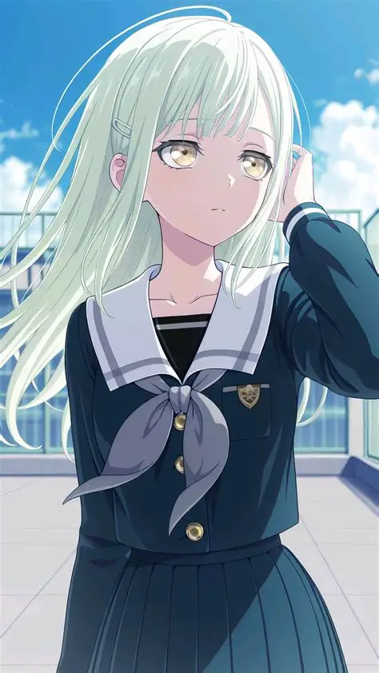
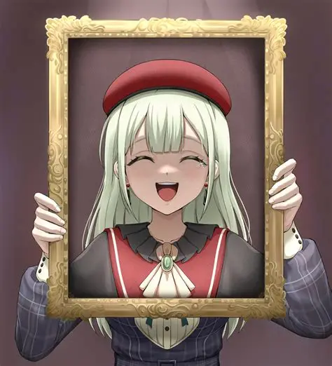
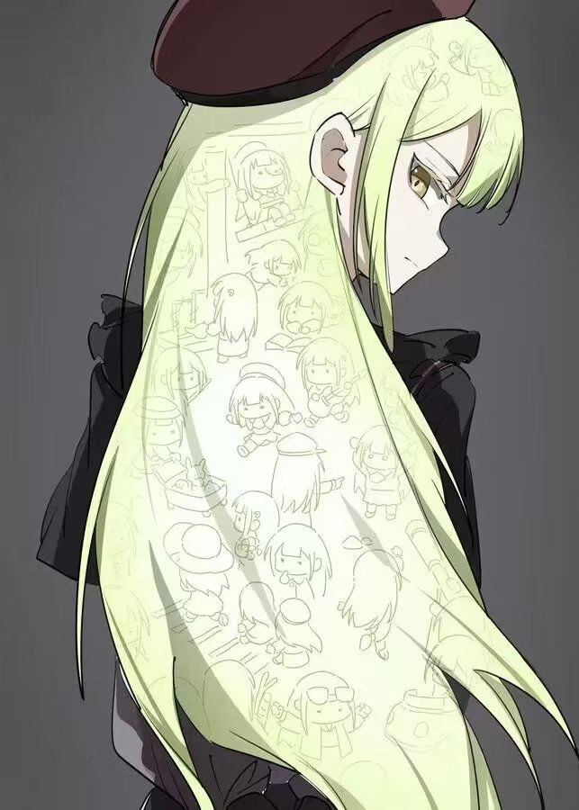

01
沉入蓝色以前
00:01:24若叶睦 WAKABA MUTSUMI
A quiet film by Toyer
每天清晨有多少双眼睛睁开，就有多少个世界
About the dreamer
Selected frames
一些没有对白的时刻，被光线与风留在了画面里。
沉入蓝色以前
00:01:24
晴日，风经过走廊
00:03:17
画框之外
00:05:42夜色与风的方向
00:06:18
藏在发梢里的小剧场
00:07:03Notes & fragments
Final scene · Keep in touch
After credits
留言由 GitHub Discussions 提供支持。